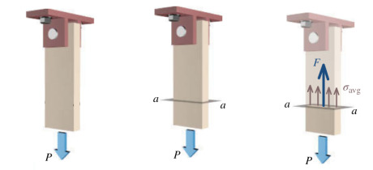
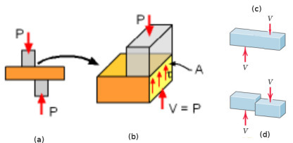
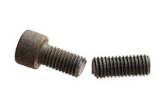
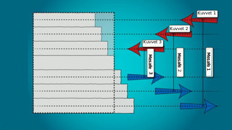
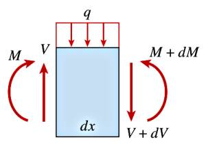

Materyel Mekaniği - 1
Eksenel Yükleme (Uniaxial Loading)
Pek çok problemde kullanılan en temel deformasyon (yamulma, şekil değiştirme) türü altta görülen tür yüklemedir. Bir demir, ya da plastik çubuk iki kuvvetle boyu yönünde (tek bir eksende yani) iki tarafa doğru çekilir, bizim ilgilendiğimiz çubukta seçilen herhangi bir noktanın nereye gittiği, yani o tek eksendeki deformasyonun ne olduğu.
Diyelim ki üstteki her üç çubuk aynı maddeden yapılmış, farklı uzunlukları ve kalınlıkları var, her çubuğa sıfırdan başlayarak belli seviyelerde $P$ kuvveti ile yük uyguluyoruz, ve çubuğun uzunluk değişimi (elongation) $\delta$ değerinin, ki tek boyuttaki deformasyon budur, ne olduğuna bakıyoruz. Her 1,2,3 çubuğu için $P/A$ ve $\delta/L$ değerlerini grafiklersek çoğunlukla sonuç ya alt soldaki gibi ya da sağdaki gibi çıkacaktır [1, sf. 76].
Eğer materyelin eksenel yük ve uzama ilişkisi lineer ise o zaman sonuç soldaki resim gibi çıkar. Grafiğin eğimine elastiklik genliği (modulus of elasticity) adı verilir ve çoğunlukla ona $E$ sembolü verilir. Formülsel olarak belirtirsek,
$$ E = \frac{P/A}{\delta / L} \qquad (1) $$
$E$ formülüne Young'in Genliği (Young's Modulus) ismi de verilir.
$\delta/L$ büyüklüğü mevcut büyüklüğe nazaran ne kadar uzama olduğunu gösteren bir oran, mesela 200 cm için 2 cm büyüme var ise 2/200, bu bir tür yüzde hesabı olarak görülebilir (ek olarak yüz ile de çarpmak gerekir ama aşağı yukarı öyle).
Not: $P$ çoğunlukla basınç (pressure) için kullanılır ama burada kuvvet.
$P/A$'nin birimi kuvvet bölü birim alan olduğu ve $\delta / L$ birimsiz olduğu için $E$'nin birimi de kuvvet bölü birim alan olacaktır. Daha ileride göreceğiz ki $P/A$ bir alan $A$ üzerindeki ortalama stres değeridir, $\delta / L$ ise $L$ boyunca hissedilen gerinim değeridir (strain).
Yani $E$ birimi Newton bölü metrekare olacaktır, $N/m^2$ ya da Pascal, Pa terimi kullanılabilir. Bazı tipik değerler demir ve çelik için $200\cdot 10^6$ kilo Newton / $m^2$, aliminyum için $69 \cdot 10^6$ $kN / m^2$.
(1) formülünü düzenleyip tekrar yazarsak,
$$ \delta = \frac{PL}{AE} $$
Üstteki formül Hooke Kanunu'nun basit bir formudur aslında; bu isim Robert Hooke bilimcisine atfendir, ki pek çok materyelin yük-deformasyon eğrisinin lineer olduğunu keşfeden Hooke'tur. Bu arada materyelin eğrisi lineer ise bu durum sarma yaylar (coiled springs) için de aynıdır. Kavramsal ve formülsel olarak bir demir çubuğu yay olarak görsek mesela $10^3 mm^2$ genişliğinde ve 1 metre uzunluğunda, Hooke Kanunu
$$ F = k x $$
ki $F$ kuvvet, $k$ yay sabiti ve $x$ uzama, mevcut semboller ile,
$$ P = k \delta $$
$$ k = \frac{P}{\delta} $$
$$ = \frac{P}{PL / AE} = \frac{1}{L / AE} = \frac{AE}{L} = \frac{10^3 10^{-3} 205}{1} = 205 GN/m $$
Alan Atalet Momenti (Area Moment of Inertia)
Herhangi bir şekil için, o şekilde olan bir eksene olan uzaklık karesinin alan üzerinden entegre edilmesiyle "alan atalet momenti" sonucu elde ediliyor [4, sf. 362].
Formül, $z$ eksen bazlı olarak
$$ I_z = \int_A y^2 \mathrm{d} A $$
Bu entegral belli şekiller / alanlar için muhakkak hep aynı olur. Üstteki kalıp bazı alanlarda, mesela inşaat mühendisliğinde, çok ortaya çıktığı için bilinir, ve belli şekiller için $I$ formülü önceden hesaplanmıştır.
Üstteki basit bir şekil tabii ki, ama onun da bir formülü var, eğer türetmek istersek,
$$ I_z = \int_{-h/2}^{h/2} y^2 (b \mathrm{d} y) = b \frac{y^3}{3} \bigg\vert_{-h/2}^{h/2} = \frac{b h^3}{12} $$
Yani dikdörtgensel şekiller için $I_z$ gerektiğinde hemen üstteki formül kullanılabilir. Dairesel, üçgensel, vb. pek çok şekil için bu hesap mevcut.
Normal Stres
Materyel mekaniğindeki anahtar kavramlardan biri stres kavramı. Bu kavram kuvvet kavramı ile alakalı fakat aynı değil [1, sf. 2]. Niceliksel olarak stres iç kuvvetlerin şiddeti (intensity), ya da etkisi. Etki sözü kuvvetin yayıldığı bir alanı ima ediyor, o zaman stres
$$ Stres = \frac{Kuvvet}{Alan} $$
olarak tanımlanabilir, yani stres kuvvetin birim alan üzerinde yarattığı etkiyi, şiddeti ölçmek için kullanılır. Stres birimi $Newton / m^2$, bir diğer ismi Pascal (Pa)'dır. Normal stresi hayal edebilmek için alttaki görüntülere bakalım, bir demir çubuk (bar) olsun, ona eksenel şekilde (ilk resim), tam dikey yönde $P$ büyüklüğünde bir yük uygulanmış. Eksenel yönde uygulanan ve maddeyi uzatmaya meyilli kuvvetlere gerilimsel (tension) kuvvetler, ufaltmaya / ezmeye / basmaya uğraşan kuvvetlere sıkıştırma (compression) kuvvetleri denir. Altta görülen eksenel kuvvet gerilimsel bir kuvvet.

Uygulanan kuvvetin madde içindeki etkilerini görmek için çubuk hayali bir düzlem ile kesilebilir (üstteki ortadaki resim). Bu kesme ardından ortaya çıkan kuvvetleri hesaba katmak gerekir, bu durumda bir $F$ vektörü olması gerekir ki bu vektör $P$'nin tam tersi yönde ona aynı yönde olan büyüklüktedir. Eğer stresi hesaplamak istersek
$$ \sigma_{avg} = \frac{F}{A} $$
diyebiliriz, ki $A$ alanı çubuğun kesme düzlemindeki alanıdır.
Bir ortalama elde edildi çünkü kesit üzerindeki tüm kuvvetleri merkeze etki eden tek bir $F$'ye indirgedik, ve alana böldük. Fakat $\sigma$ görülen kesitin her noktasında farklı olabilen bir fonksiyon da olabilirdi, üç boyutta $\sigma(x,y,z)$ gibi. Bu durumda sonsuz küçük alan üzerinden Calculus kullanarak bir stres tanımı yapmak gerekir,
$$ \sigma = \lim_{\Delta A \to 0} \frac{\Delta F}{\Delta A} $$
Hesap alttaki resmi referans alıyor,

Diğer yönden eğer stresten başlayıp $P$'yi elde etmek istiyorsak,
$$ P = \int \sigma \mathrm{d} A $$
Yani tüm alan üzerinden her ufak alan parçasında etki eden $\sigma$'ları entegre edince $P$'ye ulaşıyoruz.
Kesim Stresi (Shear Stress)
Kesim stresi bir yapıyı kopartma, kesme yönünde etki eden streştir. Daha önce gördüğümüz kesit alanını düşünürsek, o alana dik değil, ona paralel yöndeki bir etkiden bahsediyoruz. Yapıların dayanikli olmasını istiyorsak onları hem normal hem de kesim stres limitlerine göre tasarlamamız gerekir.
Normal strese benzer şekilde, ki hesabı $\sigma = P/A$ idi, kesim stresi kesim yükü bölü (teğet olunan) alan ile hesaplanır. Alttaki resme bakalım, (a) resminde $P$ yükü uygulanmış, bu yük iki yük arasındaki hayali bir alan üzerindeki alanda teğet şekilde bir $\tau$ stresi yaratır. Bu stresin yaratacağı değişiklik biraz abartılı olsa da (c,d) resimlerinde gösteriliyor.

Resmin abartılı hali gösterim amaçlı fakat kesim stresinin sonuçları hakikaten ciddi olabilir. Mesela alttaki vida dayanamayacağı bir kesim stresi yüzünden dikey yönde kopmuştur.

Normal streste olduğu gibi $\tau = V / A$ bir ortalamadır, fonksiyonel bir $\tau$ limitler ile elde edilebilir, oradan $V$ hesabı $V = \int \tau \mathrm{d} A$.
Çubuk Bükülme Gerinimi (Beam Bending Strain)
Daha önce gördüğümüz üzere bir normal gerinim $\epsilon$'nin baz tanımı
$$ \epsilon = \Delta L / L \qquad (2) $$
ki $L$ mevcut uzunluk, $\Delta L$ uygulanan kuvvet sonucu elde edilen uzama [2]. Bu formülü ufak bir demir çubuk parçasının bükülmesine uygulayabilir miyiz acaba?

Üstteki resme göre formülleri yazabiliriz. Gösterilen çubuk herhangi bir çubuk, tipi ve onun üzerindeki yükün dağılımı farketmiyor.
Resimde alt solda bükülme öncesi, sağda sonrası görülüyor, bükülme nötr eksenden $\rho$ uzaklığındaki bir nokta etrafında ve $\mathrm{d}\theta$ kadar. $\rho$'ya bükülme çemberinin / eğiminin yarıçapı (radius of curvature) ismi de verilir. Bükülme öncesi $AB$ uzunluğu mesela görülen mavi çizgi için $A'B'$ haline gelecek. Ama dikkat edersek nötr eksene yakın noktalar daha az uzayacak, uzaklar daha fazla.. bu uzaklığı bir $y$ üzerinden temsil edebiliriz. O uzaklığı hesaba katan bir gerinim formülü nasıl elde ederiz?
Nötr eksene $y$ uzaklığındaki $AB$ bükülme sonrası $A'B'$ oldu ise, bu durumu (2) bazında belirtelim,
$$ \epsilon = \frac{A'B' - AB}{AB} $$
Şimdi $A'B'$ hesabına gelelim. Dikkat edersek $A'B'$ ufak bir çember çevresi, verili yarıçapı ve açı üzerinden bu çember çevresi hesaplanabilir, tüm daire çevresi muhakkak $2 \pi r$, açısı bilinen ufak parçalar için $\pi \theta$, burada açı $\theta$ tüm $2 \pi$'ye oranlı, radyan olarak. O zaman
$$ AB = \rho \mathrm{d} \theta $$
$A'B'$ için ufak dairenin yarıçapı değişir, nötr eksene $y$ kadar uzak isek, $A'B'$ yarıçapı $\rho - y$, demek ki
$$ A'B' = (\rho - y) \mathrm{d} \theta $$
Bunları (2)'ye koyarsak,
$$ \epsilon = \frac{(\rho - y) \mathrm{d} \theta - \rho \mathrm{d} \theta}{\rho \mathrm{d}\theta} = \frac{\rho \mathrm{d}\theta - y \mathrm{d}\theta - \rho \mathrm{d}\theta}{\rho \mathrm{d}\theta} = - \frac{y \mathrm{d}\theta}{\rho \mathrm{d}\theta} $$
$$ \epsilon = - \frac{y}{\rho} $$
Üstteki gerinim formülünü stres formülüne dönüştürebiliriz, Hooke'un Kanunu $\sigma = E \epsilon$ üzerinden,
$$ \sigma = -E y / \rho \qquad (4) $$
Kirişte Bükülme Momenti (Elastik Durum)
Moment kuvvet çarpı döndürmenin etrafında olduğu merkeze olan mesafe olarak hesaplanır, tork kavramıyla alakalıdır. Bir musluğu döndürdüğümüzde iki yönden kuvvet uygularız, her iki kuvvet musluğun merkezine oranla birer tork uygular, bu bir moment ortaya çıkartır.
Eğer bir kirişe eksenel kuvvet uyguluyorsam bu kirişin bükülmesi de o kirişin içinde momentler yaratacaktır.

Bükülme resimde görüldüğü gibi kirişin üst kısımlarını sıkıştırmaya, alt kısımlarını ise esnemeye / çekilmeye mağruz eder.

Kirişi yatay ufak kesitlere bölerek bakarsak, üstteki resimdeki gibi, üstteki şeritlere dışarıdan içe doğru, alttaki şeritlere ise içeriden dışa doğru kuvvetler uygulanmış gibi kabul edebiliriz. Bu kuvvetlerin etrafında dönüş olduğu bir nötr eksene olan mesafesini de göz önüne alırsak, her ufak kesitin uyguladığı bir momenti hesaplayabiliriz.
Üç boyutta şöyle bakalım,

Stres $\sigma$ baktığımız yüzeyde kirişin her noktasındaki ufak $\mathrm{d} A$ alanındaki stresi gösteriyor, $y$ ise nötr eksene olan uzaklık, tork / moment bu uzaklık (kol) üzerinden uygulanacak.

Her noktadaki kuvvet $F = \sigma \mathrm{d} A$ olur, çünkü stres kuvvet bölü alandır, moment hesabı için mesafe ile çarparız, yani $y \sigma \mathrm{d} A$. Tüm yüzeydeki momenti bulmak için [3],
$$ M = - \int_A y \sigma \mathrm{d} A $$
Eksi işareti saat yönü tersini eksi kabul ettiğimiz için eklendi.
$\sigma = -Ey/\rho$ olduğunu biliyoruz,
$$ M = - \int_A y \left[ \frac{-Ey}{\rho} \right] \mathrm{d} A $$
Eksiler iptal olur, $y$ parantez dışına çıkar,
$$ M = \int_A y^2 \left[ \frac{E}{\rho} \right] \mathrm{d} A $$
$E/\rho$ sabit olduğu için entegral dışına alınır,
$$ M = \frac{E}{\rho} \int_A y^2 \mathrm{d} A $$
Entegral atalet momentidir, ona $I$ diyebiliriz,
$$ M = \frac{EI}{\rho} $$
Yani momenti bükülme açısı $\rho$ ve $E,I$ sabitleri ile (ki $I$ kirişin kesit şekli ile alakalıdır) hesaplayabiliyoruz.
$\rho$'dan kurtulmak için (4)'ü $\rho$ için düzenleyip üstteki formüle sokarsak,
$$ EI / (-Ey / \sigma ) = M $$
Basitleştirince
$$ \sigma = - \frac{M y}{I} $$
Bu formül bükülme normal stres (flexure) formülüdür [2], [6, sf. 364].
Kesme Kuvveti ve Dağıtık Yük
Bir kiriş üzerindeki kuvvetleri anlamak için onun ufak bir parçasına odaklanalım. Bu parçanın boyutları sonsuz küçük, eni $\mathrm{d} x$ büyüklüğünde, ve $M$ ile $V$'ye bakarken yatay olarak $\mathrm{d} M$ ve $\mathrm{d} V$ noktalarındaki moment ve kesmeye / teğetlemeye bakıyoruz.

Bu ufak parçanın üzerindeki kuvvetler görülüyor, üstte dağıtık (distributed) bir yük var, bu bir kesme etkisi $V$ yaratır, ayrıca bükülme momentleri de mevcuttur. İşaret notasyonu olarak yükler aşağı ise pozitif, moment için saat yönü tersi pozitif, saat yönü negatif.
Şimdi ilk önce dikey yöndeki kuvvetlere bakalım, burada yük, ve kesme kuvvetleri var. Üstteki figürde görülen yatay yöndeki tüm kuvvetlerin toplamı denge gerekliliği sebebiyle sıfır olmalıdır [6, sf. 321].
$$ \sum_{dik} = 0, \quad V - q \mathrm{d} x - (V + \mathrm{d} V) = 0 $$
Yani
$$ \frac{\mathrm{d} V}{\mathrm{d} x} = -q \qquad (3) $$
Böylece kirişin üzerindeki dağıtık yük ile aynı kiriş üzerindeki kesme kuvveti arasında bir ilişkiyi ortaya çıkarmış oldum.
Bükülme Momenti
Momentler için de bir denge formülü ortaya çıkartabilirim. Moment hesabı için bir nokta seçilmeli, ufak parçanın sağ noktasını baz alıyorum (resimde işaretli),

Referans nokta gerekli çünkü hatırlarsak moment bir nokta etrafındaki döndürmeye bağlıdır, kuvvet dönüş çapına teğet olan kuvvettir. O zaman
$$ \sum M_{X} = -M + \left( M + \frac{\mathrm{d} M}{\mathrm{d} X} \mathrm{d} X \right) - V \mathrm{d} X - q \mathrm{d} X \left( \frac{\mathrm{d} X}{2} \right) = 0 $$
Formüldeki $\mathrm{d} X / 2$ nereden çıktı? Moment için bir kuvvet uygulama uzaklığı lazım, uzaklık için de tek bir noktayı seçmek gerekli; bu sebeple $q$'nun etki ettiği bölgedeki kuvveti tek bir noktaya yapılıyormuş gibi farzediyoruz, o bölgenin tam ortasına, yani $- \mathrm{d} X / 2$ noktasına. Kuvvet büyüklüğü için o tüm alana etki eden kuvveti bulmak lazım, $q \mathrm{d} X$.
Devam edelim, $M$ terimleri iptal olur, kalanları tekrar düzenleriz,
$$ V \mathrm{d} X + \frac{q}{2} \mathrm{d} X^2 = \frac{\mathrm{d} M}{\mathrm{d} X} \mathrm{d} X $$
Eşitliğin her yerini $\mathrm{d} X$'e bölelim,
$$ V + \frac{q}{2} \mathrm{d} X = \frac{\mathrm{d} M}{\mathrm{d} X} $$
$\mathrm{d} X \to 0$ iken limiti alırsak, eşitliğin solundaki ikinci terim yokolur,
$$ V = \frac{\mathrm{d} M}{\mathrm{d} X} \qquad (4) $$
Böylece bir eşitlik daha elde ettim, teğetsel / kesme kuvveti $X$'e göre momentteki değişim oranına eşit. Bir önceki eşitlik yük ve kesme, bu eşitlik kesme ve moment arasında idi. Bu ilişkiler Statik (Statics) dersinden geliyor, onları bulmak kolaydı.
Kirişin Yatay Kesme Stresi
Kesme stresi $\tau$'yu bulmak için yine kirişin ufak bir kısmına odaklanalım,

Tüm etki eden kuvvetlerin toplamı sıfır olmak zorundadır [2],
$$ -P + (P + \mathrm{d} P) + \tau b \mathrm{d} x = 0 $$
ki $b$ kesme stresinin uygulandığı noktadaki kiriş derinliğidir.
$$ -\mathrm{d} P/\mathrm{d} x = \tau b \qquad (1) $$

$P$'yi bulmak için $A$ bölgesindeki stresleri entegre ediyoruz,
$$ \int_A \mathrm{d} P = \int_A \sigma_b \mathrm{d} A $$
Fakat daha önce bulduk ki $\sigma_b = -My / I$, yerine koyunca,
$$ P = \int_A - \frac{My}{I} \mathrm{d} A $$
$M$ ve $I$ sabittir, entegral dışına çıkartılabilir,
$$ P = - \frac{M}{I} \int_A y \mathrm{d} A = - \frac{MQ}{I} $$
Üstte bulunan $P$'yi (1)'e sokunca,
$$ - \frac{\mathrm{d}}{\mathrm{d} x} \left( - \frac{MQ}{I} \right) = \tau b $$
$$ \frac{Q}{I} \frac{\mathrm{d} M}{\mathrm{d} x} = \tau b $$
Şimdi hatırlarsak $\mathrm{d} M/\mathrm{d} x$ türevi yatay kesme / teğetsel yükü $V$'ye eşittir. O zaman
$$ \frac{Q}{I} V = \tau b $$
Nihai yatay kesme stres denklemi,
$$ \tau = \frac{V Q}{I b} $$
Kaynaklar
[1] Philpot, Mechanics of Materials
[2] Gramoll, Mechanics, http://www.ecourses.ou.edu/cgi-bin/ebook.cgi?topic=me
[3] BioMechie, Bending Moment, Elastic Case, https://www.youtube.com/watch?v=asBW0Ojc0bY
[4] Craig, Mechanics of Materials, Third Edition
[6] Gere, Mechanics of Materials
Yukarı